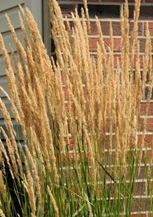

As seen on Georgia Gardens, ornamental grasses can add new drama, texture, and color to your garden. Best of all, they tend to be very hardy and low-maintenance plants.
In the South, most ornamental grasses grow quickly in the spring and summer, bloom late in the summer and fall, and are dormant throughout the winter. They are very versatile—they can be annuals or perennials, and they can be ground covers or can reach up to 20 feet tall. Some have flowers and are brightly colored, and all have interesting textures and sway gracefully in the wind.
Ornamental grasses can be used as accent plants, but they can also be used to solve problems in your landscape. Try planting them to create a hedge, a border, or a groundcover.
Some dramatic ornamental grasses that do well in the South: Pampas Grass, which can reach up to 20 feet in height and has large silvery white flower plumes on long stems; Red Baron Japanese Blood Grass, which is about 12 to 18 inches tall and has bright red foliage in summer and fall; and Variegated Purple Moor Grass, which has purplish leaves with cream stripes.